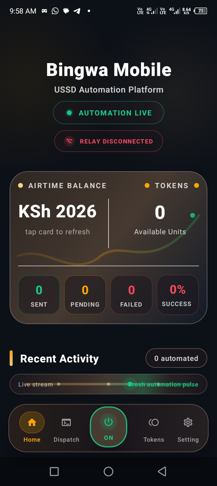
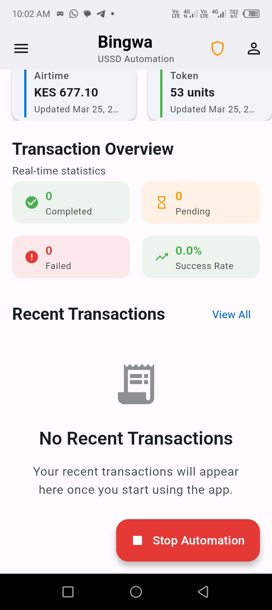

Bingwa Mobile User Guide
This guide shows how to start using Bingwa Mobile, where to go for each task, and what the most important screens mean. It is written as a practical walkthrough, so a new user can follow it from setup to daily use without guessing.
What the app is for
Bingwa Mobile helps an operator receive customer requests, send data offers, monitor activity, and track dispatch results from one app. The main workflow is simple: make sure the app is set up correctly, confirm you have airtime or tokens, choose the customer and offer, then dispatch and monitor the result.
Home
Check whether automation is live, see airtime and token balances, and review recent activity.
Dispatch / Manual
Send an offer to a customer directly when you want immediate operator control.
Tokens
Track available token units or an active unlimited plan before a busy period begins.
Settings
Choose SIMs, enable automation, configure relay mode, adjust messages, and run diagnostics.
Complete the setup checks first. If permissions, SIM selection, accessibility, or battery settings are wrong, live dispatch can fail even when the app itself opens normally.
Quick start
Use this order the first time you open the app. It follows the safest path from setup to live dispatch.
flowchart LR
A[Open Bingwa Mobile] --> B[Run Setup Doctor]
B --> C[Grant SMS, phone, and notification permissions]
C --> D[Enable Accessibility if needed]
D --> E[Choose SIM Settings]
E --> F[Review Offers and USSD Codes]
F --> G[Import or save contacts]
G --> H[Check airtime and tokens]
H --> I[Send first test dispatch]
- Open
Settings > Setup Doctorand clear anything marked as needing attention. - Open
Settings > SIM Settingsand choose the SIM for USSD execution, customer notifications, and admin replies. - Review
Offers & USSD Codesso only the correct offers are enabled. - Import customer names from M-PESA SMS or add contacts manually.
- Check airtime and tokens from the dashboard before you process real customer requests.
- Send one test dispatch before depending on the app for full-day operations.
UI labels can vary slightly between versions, but the workflow remains the same: diagnostics, permissions, SIM setup, offers, contacts, then dispatch.
Understanding the home screen
The home screen is the best place to check the app’s current health. It shows whether automation is active, whether relay mode is connected, how much airtime and token balance is available, and the latest transaction counts.

1 2 3 4 5 6Use this area to confirm you are on the main dashboard and that the app is in the expected operating mode.
These badges quickly show whether automation is live and whether relay mode is connected or disconnected.
This is the balance used for dispatch operations. Refresh it before a busy period so you do not run out during live work.
Watch this area if your deployment uses tokens. A low token balance can stop new requests even if airtime is still available.
The sent, pending, failed, and success figures help you understand what happened recently without opening history first.
Use the navigation bar to move between the home screen, dispatch flow, token view, and settings.
Start on the home screen each morning. A quick check of automation, relay status, airtime, and tokens will catch most problems before customers are affected.
Main screens
Once you know the home screen, the next step is understanding which screen to open for each task. The app is easiest to learn when you connect each screen to a specific job.
| Screen | Use it for | What to check first |
|---|---|---|
| Home | Overall status, recent activity, balances, and automation state | Automation live, relay state, airtime, tokens |
| Dispatch / Manual | Sending a bundle directly to a customer | Correct phone number, correct offer, ready status |
| Tokens | Checking available usage units or unlimited plan state | Enough units left for the expected workload |
| Contacts | Finding, importing, and cleaning customer names and numbers | Duplicate names, missing phone numbers, old entries |
| Settings | SIM setup, notifications, automation, relay mode, remote control, diagnostics | Permissions, selected SIM, customer message templates |

1 2 3 4 5Shows the latest airtime value and when it was last refreshed.
Shows the current token units so you can decide whether more are needed.
Gives a clean summary of completed, pending, failed, and success-rate metrics.
This section becomes more useful as you start processing real customer traffic.
Use the main action button carefully when starting or stopping automation during live work.
Core tasks
Send a bundle manually
- Open the dispatch or manual screen from the bottom navigation.
- Enter the customer phone number.
- Confirm the customer name from contacts or imported M-PESA matches.
- Select the correct offer.
- Review the status message before sending.
- Start the dispatch and watch for a completed, pending, failed, or relayed result.
Check balances before processing customers
- Check airtime on the dashboard card.
- Check tokens in the token card or token screen.
- Make sure the app is still live if you rely on automation.
Build a clean customer directory
- Import from M-PESA SMS when you want faster name matching.
- Save customer names in a consistent format.
- Remove duplicates so the right customer appears quickly during dispatch.
Know where to go for common goals
| If you want to… | Open this area | Main action |
|---|---|---|
| Verify setup problems | Settings > Setup Doctor | Review permissions, accessibility, battery rules, exact alarms, and SIM detection |
| Choose which SIM to use | Settings > SIM Settings | Select USSD, customer-notification, and admin-reply SIMs |
| Change customer message text | Settings > Customer Notifications | Edit success, pending, and failure templates |
| Review offer choices | Settings > Offers & USSD Codes | Enable only the offers you actually want to sell |
| Retry failed work | Transaction History | Review failed items and retry when the cause has been fixed |
Advanced features
Two-phone relay mode
Relay mode lets one phone manage the workflow while another phone performs the actual execution. Use this only after the basic single-phone setup works correctly, because relay mode adds extra points that must match on both devices.
- Enable two-phone mode in the relay settings.
- Choose whether the current device is the primary or relay phone.
- Set the same relay prefix on both phones.
- If you use a PIN, it must match on both devices.
- If you use hotspot relay, confirm the relay IP settings are correct.
Remote control by SMS
Remote control lets an admin phone send commands to the app. Save the admin number first, set an SMS prefix, and optionally protect commands with a PIN.
<PREFIX> <COMMAND>
Example:
BINGWA STATUS
If a PIN is enabled:
BINGWA 1234 STATUSCommon remote commands include status checks, balance checks, token checks, listing offers, enabling or disabling offers, retrying transactions, and triggering a live buy command.
Only the saved admin phone should be allowed to send control commands. Test remote commands with a harmless check such as status or balance before using any command that can trigger a live purchase.
Troubleshooting
The app opens but dispatch does not start
- Recheck the selected USSD SIM.
- Confirm the offer is enabled.
- Check airtime or network balance.
- Verify phone and SMS permissions are still granted.
Automation worked before but now stops in the background
- Open Setup Doctor and review battery protection.
- Allow notifications if the device requires them.
- Allow exact alarms on Android 12 and above.
- Check whether the device changed accessibility settings after an update.
M-PESA names are missing or incomplete
- Make sure SMS read access is enabled.
- Import contacts again from the contacts area.
- Set the app as the default SMS app if the phone requires that for message access.
Relay mode is connected one moment and broken the next
- Confirm the phones still share the same relay prefix.
- Recheck the paired phone number and PIN.
- If using hotspot relay, verify the relay IP value again.
- Use the home screen relay status badge as your quick warning signal.